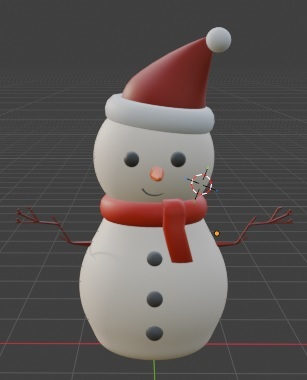

1493
Снежный гигант во Флоренции
По свидетельству Джорджо Вазари, молодой Микеланджело вылепил снежную фигуру во дворе палаццо Медичи. Снеговик простоял недолго, зато попал в историю искусства.
Здесь собран снеговик целиком: три снежных шара, морковка, история длиной в пять веков, обычаи шести стран и рекорды, которые сложно представить. А ещё — настоящая 3D-модель, которую можно повертеть прямо в браузере.

Модель собрана из простых фигур — сфер, конуса и цилиндра, — как и настоящий снеговик. Потяните её мышью или пальцем, а если нужна пауза, отключите автоповорот.
Настоящий снеговик собирается по такой же схеме — от большого шара к маленькому. Разница только в том, что модель не растает.
Самый простой снеговик — это два или три снежных шара, поставленных друг на друга, с морковкой вместо носа и угольками вместо глаз. Всё остальное — шарф, шляпа, метла, ветки-руки — уже украшение, которое каждый добавляет по вкусу.
За пять веков снеговик прошёл путь от придворной забавы до символа зимних праздников: он появляется на открытках, в песнях, в мультфильмах и во дворах — примерно там же, где и пятьсот лет назад. В России рядом с ним обычно стоит «снежная баба» — та же фигура, только с другим характером.

Снег, вода и немного давления: влажный снег при температуре около нуля лепится в плотные шары, которые держат форму всю зиму.
Снеговик — редкая скульптура, которую делает кто угодно и без подготовки. Это повод выйти на улицу, повозиться в снегу и оставить во дворе свой автограф.
В некоторых европейских деревнях снежной фигуре приписывали защитную роль: ей доверяли просьбы, а весной она уносила их с собой вместе с талой водой.
Снежных фигур лепили и раньше, но первое документированное свидетельство относится к 1493 году. С тех пор снеговик успел побывать придворной диковиной, ярмарочным героем и звездой мультфильмов.

По свидетельству Джорджо Вазари, молодой Микеланджело вылепил снежную фигуру во дворе палаццо Медичи. Снеговик простоял недолго, зато попал в историю искусства.
За неделю горожане соорудили больше сотни снежных скульптур — от бытовых сцен до мифологических. Событие описал поэт Ян Смит, и это был первый массовый снежный фестиваль в истории.
Снеговиков лепят на Святки и Масленицу, им добавляют шляпы, трубки и метлы: по этим деталям читался достаток и характер хозяев двора.
Снеговик перебирается на рождественские открытки в Англии и Германии, появляется в детских книгах и витринах магазинов — именно тогда складывается привычный образ с цилиндром и шарфом.
Песня в исполнении Джина Отри становится хитом, а в 1969 году выходит мультфильм. Снеговик окончательно превращается в персонажа поп-культуры.
В американском Бетеле, штат Мэн, собирают снеговика «Олимпию» высотой 37,21 метра. Рекорд не побит до сих пор.
Снеговиков лепят во дворах, на фестивалях и корпоративных праздниках, полярники собирают их из плотного снега в Антарктиде, а дизайнеры — из полигонов в 3D.
Форма, одежда и даже смысл фигуры в каждой стране свои. Вот шесть традиций, которые объясняют снеговика лучше любой энциклопедии.
Наши снеговики почти всегда трёхшаровые — с ведром на голове и метлой в руке. Рядом с Дедом Морозом и Снегурочкой они стали частью новогоднего двора.
Снеговик — обязательный герой рождественских ярмарок и открыток. В некоторых регионах в конце зимы сжигали соломенную фигуру «господина Зиму».
В викторианскую эпоху снеговик перебрался с улиц на рождественские открытки: его рисовали с цилиндром, шарфом и трубкой.
Песня «Frosty the Snowman» 1950 года и мультфильм 1969 года сделали снеговика с метлой и старой шляпой национальным персонажем.
Японский снеговик «юкидарума» — это два шара, чаще всего без рук и морковки: форма напоминает куклу дарума, символ удачи.
В Цюрихе в апреле сжигают соломенного снеговика Бёёгга. По традиции, чем быстрее взрывается его голова, тем теплее и удачнее будет лето.
Классические пропорции — три шара диаметром примерно 80, 60 и 40 сантиметров. Всё остальное подскажет снег.
Лучший снег — влажный, при температуре около нуля: он лепится, а не рассыпается в руках.
Начните с небольшого кома и катайте его по свежему снегу, пока шар не станет нужного размера.
Нижний шар утрамбуйте и подровняйте снизу. Второй и третий сажайте на «снежный клей».
Угольки для глаз, морковка для носа, веточка или ряд угольков для улыбки.
Шарф, шапка или ведро, старые варежки на ветки-руки. Тёплая одежда не растопит снег.
Снимайте с уровня глаз снеговика и при боковом свете: так видны тени и фактура снега.
Снеговиков измеряли, взвешивали, фотографировали из космоса и собирали под микроскопом.
Снеговика «Олимпию» высотой 37,21 метра собрали в 2008 году в городе Бетель, штат Мэн.
В 2005 году учёные собрали снеговика из трёх крошечных шариков — его можно рассмотреть только в микроскоп.
Дата выбрана не случайно: единица похожа на метлу, а восьмёрка — на самого снеговика.
В Брюсселе за неделю соорудили больше сотни снежных фигур. «Чудо 1511 года» описали поэты и хронисты.
Объект Аррокот оказался похож на снеговика: снимок, полученный зондом New Horizons, облетел весь мир.
Лучше всего снеговик лепится при температуре около нуля и влажном снеге.
Пять вопросов, которые чаще всего задают про снеговиков.
Группа ИСП-25 · Воркутинский агропромышленный колледж (ВАГПК)

Данная 3D-модель создана в рамках учебной практики по специальности 09.02.07 «Информационные системы и программирование».
Модель демонстрирует навыки работы с трёхмерной графикой, включает интерактивное вращение в браузере с использованием библиотеки Three.js, и служит наглядным примером применения веб-технологий для визуализации объектов.
Формат: GLB (snegovik.glb)
Технологии: HTML, CSS, JavaScript, Three.js
Назначение: учебная 3D-презентация

⛄